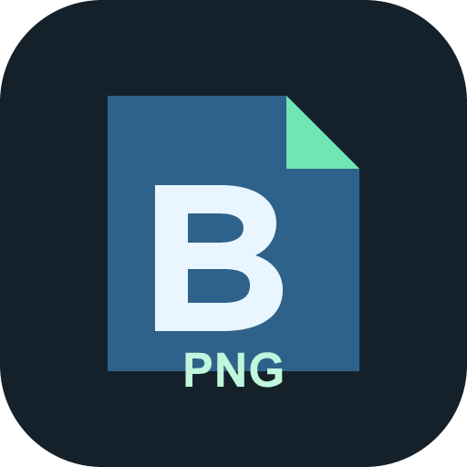
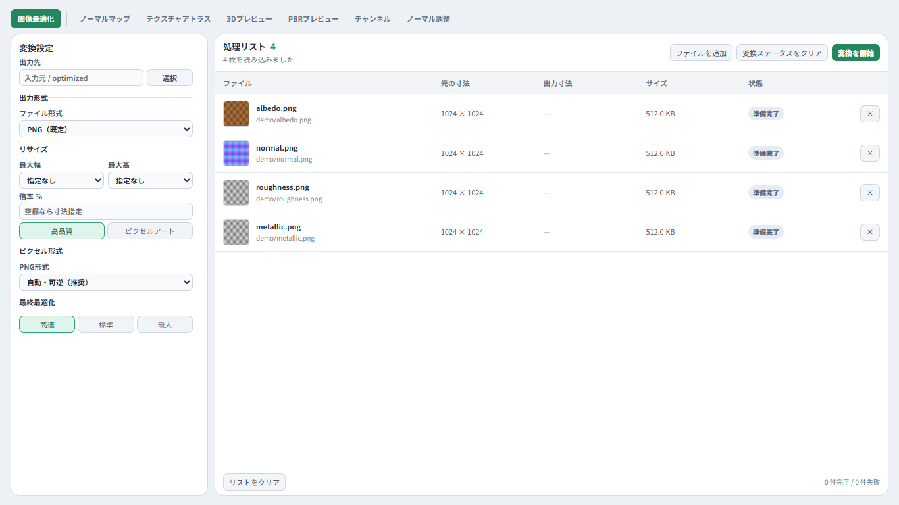
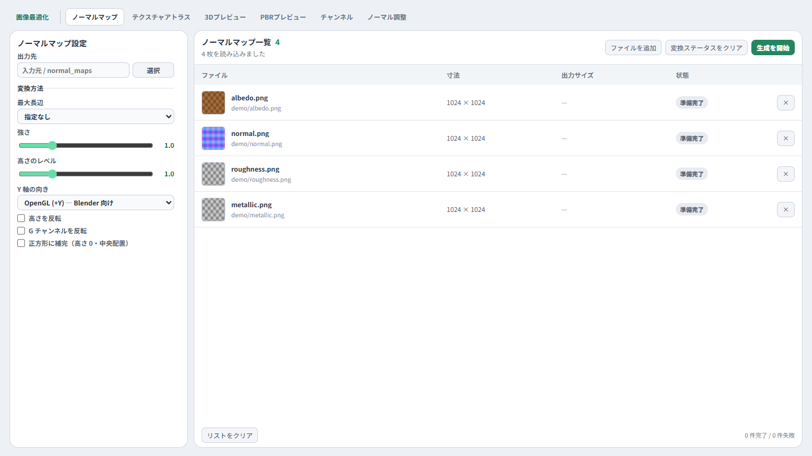

画像最適化
PNG・WebP・JPEGへ一括変換。リサイズ、インデックスカラー、透過PNGの出力に対応。

Be Asset OptimizerBLENDER ASSET WORKFLOW Windows / v1.0.0
画像の軽量化・リサイズ・減色を、一括で。
ノーマルマップ、アトラス、3D確認まで、素材の準備をひとつのアプリに。
日本語・英語対応 ／ PC内で処理 ／ オープンソース

TOOLS
画像最適化を中心に、3D素材づくりで繰り返す作業を揃えました。
PNG・WebP・JPEGへ一括変換。リサイズ、インデックスカラー、透過PNGの出力に対応。
画像の明度や高さマップから生成。OpenGL / DirectX、強さ、反転、正方形補完を設定。
最大16枚を結合。枠の4分割、ドラッグ入れ替え、解像度と境界の余白を指定。
球・立方体・平面でマテリアルを確認。同梱HDRIの明るさと回転を調整できます。
RGBAを合成・分離。ORMやUnity Metallic-Smoothnessのプリセットも用意。
既存ノーマルの強度・G反転・詳細合成。元画像と調整後を並べて確認できます。
FBX・GLBの形状とテクスチャを確認。UV不足や画像寸法の混在などを診断します。
入力画像やモデルを外部へアップロードしません。AI復元・生成AI・モデルのダウンロード機能はありません。
INSIDE THE APP
タブを移動しても入力は保持。スクリーンショット付きのヘルプも内蔵しています。

画面はデモ素材を読み込んだ例です。
HOW TO USE
画像やフォルダーをドロップ。ファイル選択からも追加できます。
形式、リサイズ、色形式を選択。保存先も指定できます。
処理状況を一覧で確認。元ファイルは上書きしません。
FAQ & REQUIREMENTS
Windows 10 バージョン2004以降、またはWindows 11のx64環境に対応。Microsoft Edge WebView2 Runtimeと、960×640以上の画面が必要です。3DプレビューにはWebGL 2対応のグラフィックス環境を使用します。
PNG / JPEG / JFIF / WebP / HEIC / HEIF / BMP / TIFF / GIF / TGA / DDSを読み込めます。画像最適化はPNG / WebP / JPEGで出力します。GIFは先頭フレームを使用します。
本アプリは単体で動作します。Blender向けの素材準備を想定していますが、他の3D制作ワークフローでも使用できます。
BOOTHのZIP版は未署名です。Windowsの設定によって起動がブロックされる場合は、Microsoft Store版をご利用ください。
3Dプレビューは確認・診断用です。モデルの編集やFBX / GLBの再出力は行いません。すべてのマテリアルや独自シェーダーの再現を保証するものではありません。
GPL-3.0-or-laterのオープンソースソフトウェアです。利用・改変・再配布はライセンスの条件に従います。本ソフトウェアは無保証で提供されます。ソースコードとライセンスを見る ↗